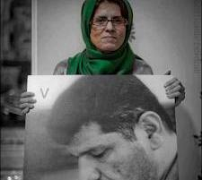

پذيرش > اخبار > ژیلا بنی یعقوب و بهمن احمدی امویی؛ در چهارمین ماه بدون ملاقات


 ژیلا بنی یعقوب و بهمن احمدی امویی؛ در چهارمین ماه بدون ملاقات ژیلا بنی یعقوب و بهمن احمدی امویی؛ در چهارمین ماه بدون ملاقات
26 آبان 1391 - - نسخه قابل چاپ
کلمه: ۱۲ شهریور، هنگامی که سربالایی اوین را با چمدانی کوچک اما سنگین تر از خود طی می کرد تا به دیگر همکاران و همراهانش در زندان اوین برای گذراندن حکم یک ساله اش بپیوندد، تنها یک حرف و نگرانی داشت که به خواهرش و دوستانی که برای بدرقه آمده بودند بگوید: “بهمن! نگران بهمن هستم، حالا که من به زندان می روم چه کسی به ملاقات او خواهد رفت، او در رجایی شهر، من در اوین، بهمن تنها می شود.” و تمام تلاشش را تا پیش از زندان رفتن کرد که بهمن را به اوین برگرداند و نهایتا خودش میهمان اوین شد و همسرش در رجایی شهر ماندگار شد.
ژیلا بنی یعقوب در حالی به زندان اوین رفت تا دوران محکومیت خود را سپری کند که همسرش بهمن احمدی امویی نیز از خرداد ماه امسال به زندان رجایی شهر کرج منتقل شده است و دوران محکومیت خود را می گذراند.
این زوج روزنامه نگار مدت سه ماه است که با یکدیگر ملاقات نداشته اند و با وجود مراجعه مکرر خانواده این روزنامه نگاران به دادستانی اما کماکان پاسخ مثبتی برای تعیین وقت ملاقات دریافت نکرده اند. به دلیل قوانین حاکم بر زندان رجایی شهر، اخرین ملاقات آنان دو، دومین روز شهریور ماه بوده است و از آن روز تا کنون برخلاف قوانین و مهمتر از آن وظیفه شرعی و انسانی ماموران امنیتی و قضایی از یکدیگر دور هستند.
مادر این روزنامه نگار دربند به دلیل کهولت سن و بیماری نمی تواند به ملاقات پسرش برود و طی این سه سال و نیم نتوانسته او را ببنید. برادران بهمن احمدی امویی نیز که در شهرستان زندگی می کنند نمی توانند مرتب به ملاقات برادر خود بیایند و از این رو بهمن احمدی امویی این روزها بدون ملاقات روزگار را در رجایی شهر سپری می کند.
ژیلا بنی یعقوب و بهمن احمدی امویی، خرداد ماه سال ۸۸ به دنبال سرکوب های پس از انتخابات بازداشت شدند، ژیلا مدتی را در انفرادی سپری کرد؛ نهایتا پس از دو ماه بازداشت موقت با قید وثیقه آزاد شد اما بهمن در اوین ماندگار شد و پس از تمام شدن دوران انفرادی به بند ۳۵۰ منتقل گشت.
ژیلا بنییعقوب، روزنامه نگار وسردبیر وب سایت کانون زنان ایرانی سال ها در تحریریه روزنامه های مختلف از جمله همشهری، نوروز، وقایع اتفاقیه، یاس نو، صبح امروز، آفتاب آمروز، سرمایه و …به عنوان خبرنگار و دبیر سرویس اجتماعی فعالیت داشته است . او تاکنون برنده جایزه بین المللی شجاعت در روزنامه نگاری از بنیاد بین المللی رسانه های زن و همچنین برنده جایزه جهانی آزادی بیان از سازمان روزنامه نگاران کانادایی شده است. این روزنامه نگار همچنین جایزه ویژه آزادی بیان سازمان گزارشگران بدون مرز را نیز از آن خود کرده است.
او در خرداد ۱۳۸۹ به یکسال حبس تعزیری و ۳۰ سال محرومیت از شغل روزنامهنگاری محکوم شد که نهایتا این حکم در دادگاه تجدید نظر نیز عینا تایید شد.
بر اساس فیلمی که یک شهروند خبرنگار از ژیلا بنی یعقوب در روز ها و سال های پس از خرداد ۸۸ گرفته، این روزنامه نگار روزگار خود را این گونه به تصویر کشیده است: “الله اکبر گفتن ها با خواهر زاده اش، خواندن شعرهای سبز مقاومت با مادرش، چشم انتظاری برای بهمن، رسیدگی به پرونده زندان و بالاخره چمدان بستنش برای رفتن به اوین.”
بنی یعقوب روزنامه نگار متعهدی است که در داخل مرزهای کشور باقی نماند و با سفر به کشورهای مختلف مانند عراق و افغانستان تلاش کرد تا مشکلات مردم دیگر کشورها خصوصا زنان را نیزبیان کند. او با گزارش هایی از زنان در سرزمین های جنگ زده یی مانند افغانستان، لبنان، عراق و گزارش هایی از زند گی دشوار زنان در فرهنگ های متعصب برای تغییر ساختار ها کوشش کرده است. این روزنامه نگار تا پیش از خرداد ۸۸ نیز سه بار به دلیل اعتراض به سیاست های دولت به زندان رفته است. ژیلا بنی یعقوب از جمله زندانیان زنی نیز بود که در اعتراض به هتک حرمت و آزار جنسی در حین بازرسی توسط ماموران زندان، دست به اعتصاب غذا زد.
بهمن احمدی امویی، نیز با روزنامه های خرداد، نوروز، شرق و وقایع اتفاقیه، سرمایه و .. همکاری داشته و در زمان بازداشت دبیر گروه اقتصادی روزنامه سرمایه بود. امویی به اتهام «تجمع و تبانی با هدف اخلال در امنیت ملی»،« تبلیغ علیه نظام»،«اخلال در امنیت عمومی» و «توهین به رئیس جمهوری» محکوم شده است و هم اکنون در حال گذراندن دوره محکومیت پنج سال و چهارماه خود در زندان رجایی شهر است. او تاکنون دو کتاب به نامهای «اقتصاد سیاسی جمهوری اسلامی» و «مردان جمهوری اسلامی چگونه تکنوکرات شدند» را به رشته تحریر در آورده است. انتشار شعری حماسی از فردوسی در سایت خرداد یکی از اتهامات این روزنامه نگار اعلام گردید. بهمن احمدی امویی یک بار در آستانه نوروز ۸۸ توانست به مرخصی بیاید که نهایتا روز ۹ خرداد ۱۳۸۹ مرخصی او تمدید نشد و به زندان بازگشت و تا امروز نیز به مرخصی نیامده است. این روزنامه نگار برنده جایزه جهانی هلمن-همت در سال۲۰۱۱ است.
در خرداد ماه سال جاری بهمن احمدی امویی به رجایی شهر منتقل شد. این روزنامه نگار هنگام انتقال به زندان رجایی شهر مورد بی احترامی ماموران قرار گرفت و به او فرصت تعویض لباس نداده و با کفش دم پایی و پیژاما و زیر پیراهن و با زدن دستبند و پابند و چشم بند و ضرب و شتم با باتون به زندان رجایی شهر برده بودند. به او اجازه جمع آوری و بردن وسائل شخصی نیز داده نشده است.
به دنبال برگزای مراسم سالگرد مرگ هدی صابر در بند ۳۵۰ اوین، شش زندانی به انفرادی های بند ۲۰۹ اوین منتقل شدند که در این میان بهمن احمدی امویی، در ساعت یک نیمه شب به بند قرنطینه رجایی شهر منتقل شد. چند روز پس از انتقال او به رجایی شهر سلول انفرادی این زندان منتقل می شود بی آنکه کسی دلیل واقعی آن را بداند.
انتقال احمدی امویی در حالی صورت گرفت که در حکم ۵ سال حبس تعزیری او، تبعید وجود ندارد. پس از مسعود باستانی و مهسا امرآبادی این دومین زوج روزنامه نگاری هستند که همزمان در دو زندان متفاوت دوران محکومیت خود را طی می کنند.
بهمن احمدی امویی در نامه ای که به مناسبت تولد همسرش نوشته بود از زندان بدون ملاقات گفته است و آنکه تصور می کرده با انتقال همسرش به زندان اوین او نیز می تواند او را پشت دیوارهای همان زندانی که خود در آن حبس میکشد، ببیند. او در مدتی که در زندان اوین بوده برای دوران زندان همسرش حوله و ملحه کار گذاشته بوده و برای اینکه او بیاید و مبادا وسایل مورد نیاز و ضروریات را نداشته باشد، چیزهایی را مانند یکی دو قوطی قرصهای تقویتی و ویتامین به همراه یک بالش کوچک کنار گذاشته و در نهایت از بازی های روزگار تعجب کرده که اکنن او این وسایل در زندان گوهردشت کرج کیلومترها از ژیلا دور هستند، قرار است او در زندان اوین باشد.
ژیلا بنی یعقوب نیز که این روزها را به دور از همسرش در زندان اوین سپری می کند در نامه ای به همسرش بهمن احمدی امویی در زندان رجایی شهر، گزارش کوتاهی از روزهای زندان خود داده است. او در نامه خود نوشته است که دوست نداشته تا روزهای اخیر به دیدن بهمن برود و خداحافظی کند چون می دانست ملاقاتی در پیش است که می تواند با ملاقات بعدی یک سال فاصله داشته باشد و او شجاعت یک ساله خداحافظی با همسرش را نداشته باشد.
ارسال به
بالاترین
،
توییتر
،
فریندفید
،
فیسبوک
در همين بخش :
 پروین ذبیحی برنده جایزه حقوق بشری سازمان غيردولتى اتريشى سودويند شد پروین ذبیحی برنده جایزه حقوق بشری سازمان غيردولتى اتريشى سودويند شد
پخش کارت پستال و بروشور در روز جهانی زن در تهران
تمدید زمان برای امضای بیانیهی جمعی از فعالان زن به مناسبت هشت مارس
مجوزی که در نطفه خفه شد
بیش از 2000 امضا در اعتراض به تبعیض های آموزشی به مجلس تحویل داده شد
ديگر بخش ها :
طرح یک میلیون امضا
|
مقالات
|
سایت نوشته ها
|
اخبار
|
گزارش كمپين
|
گفت و گو
|
علیه سکوت
|
كوچه به كوچه
|
نامه های شما
|
گزارش ویژه
|
گفتگو با اعضا
|
ویژه سالگرد کمپین
|
تصویر برابری
|
دل آرام علی
|
تریبون
|
مقالات
|
تاریخ شفاهی
|
خارج از چارچوب
|
کتابخانه
|
درباره کمپین
|
کمپین در شهرها
|
کمپین در بند
|
صدای تغییر
|
ویژه 22 خرداد
|
لایحه حمایت از خانواده
|
گالری
|
عشا مومنی
|
امیر یعقوبعلی
|
خدیجه مقدم
|
راحله عسگری زاده و نسیم خسروی
|
پروین اردلان،جلوه جواهری، مریم حسین خواه، ناهید کشاورز
|
زینب پیغمبرزاده
|
سعیده امین، سارا ایمانیان، محبوبه حسین زاده، ناهید کشاورز و همایون نامی
|
احترام شادفر
|
نسیم سرابندی زاده،فاطمه دهدشتی
|
وبلاگ مهمان
|
پرونده خرم آباد
|
دستگیری ها
|
مریم مالک
|
پرستو اللهیاری
|
مهرنوش اعتمادی
|
سمیه رشیدی
|
Other Languages
|
همراهان
|
«فراخوان کمپین ده روز با بهاره هدایت»
| English
|